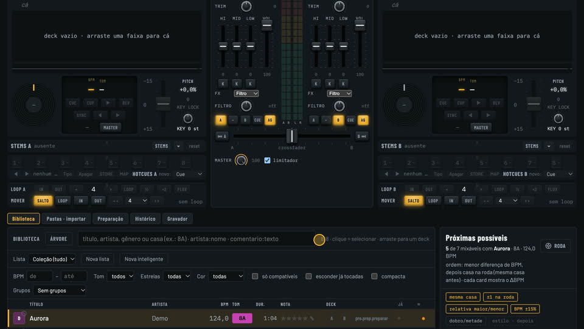

Two decks
Cue, loop, hotcues, pitch and key lock, with waveform and platter.
Two decks, a full mixer and AI stem separation, running on your device. Your music never leaves it.
Chrome or Edge on a computer · test version · free
Cue, loop, hotcues, pitch and key lock, with waveform and platter.
Split vocals, drums, bass and the rest of any track and mix each part.
Three-band EQ, filter, crossfader, limiter and per-channel effects.
BPM and key detected, sync, quantize and beat grid.
Let VbMx blend in the next track for you.
Interface in four languages, switched on the fly.
Each step has a video a few seconds long, recorded on the VbMx Pro screen itself, and two sentences telling you where to click. Names shown as keys, like SYNC, are the labels you see on screen.
The videos have no sound and loop. The amber circle is the mouse pointer.
In the Library, grab the track's row and drag it to deck A or B. The empty deck says "drag a track here" and lights up when the track is over it.
On a short screen the library is folded into the LIBRARY ▲ bar at the foot of the page. The A and B buttons on the row load without dragging.
Each deck shows the track's BPM and KEY (on the Camelot wheel, like 8A). Click SYNC and the deck matches the other one's tempo: the PITCH moves by itself and the original BPM stays noted underneath.
KEY LOCK holds the key when the tempo changes.
On the top bar, QUANT locks cues and loops to the beat and SNAP locks markers to the grid. Grid ▸ opens each deck's panel: if the grid is off the beat, nudge it with ◀ 10 ms and 10 ms ▶.
In the same panel: ×2 and ÷2 fix a BPM read at half or double, TAP sets it by tapping and RESET undoes.
Buttons 1 to 8 under HOTCUES store points in the track. On an empty button, a click stores where the track is; on a stored button, a click jumps to that point.
Delete clears the selected hotcue and Type changes what it is.
In LOOP A, pick the length in beats with ◂ and ▸ and click LOOP: the section is marked on the waveform and repeats. ½ and ×2 shorten and lengthen it without leaving the loop.
IN and OUT set the start and the end by hand. Click LOOP again to leave.
Each channel has TRIM, the three-band EQ HI MID LOW, the FILTER and VOL. Take the bass out of the incoming track, open the filter little by little and move the crossfader from A to B.
The K under each band kills that band at once. CUE sends the channel to the headphones.
Stems+, on the top bar, hides hotcues and loops and gives the space to the stems. On each deck, the STEMS button splits the track and turns the mode on; while the separation does not exist yet, the deck's strip says "missing".
The first time, the browser downloads the separation model, about 90 MB, and the separation only starts after the download. Use Chrome or Edge. The video shows where the control is, not the separation happening.
In FX1 or FX2, pick the effect from the list (Filter, Delay), send it to A or B, turn it ON and dose it with D/W. For automatic mixing, with a deck playing, click Tree in the library and then Auto: VbMx picks the next track and makes the transition.
The AUTO on the top bar is something else: it is the automatic master tempo.
Your audio stays on your device. Nothing is uploaded, there is no account and no sign-up.
Open VbMx Pro, drag in two tracks and repeat the steps. Nothing is installed: it runs in the browser.